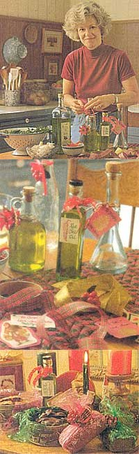
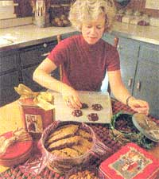

Mother's Kitchen
Save time, headaches, and money by making your own gifts.
Most of us recall making homemade gifts as kids. How can we forget? Every December our mothers ceremoniously hang up gold macaroni wreaths, glittery egg carton ornaments, and other embarrassing pieces of creativity. For years my dad had an abstractly decorated orange juice can filled with pens on his desk. There can only be one reason why one would cherish these tacky treasures: they mean something. Homemade gifts, no matter how humble, contain a small part of the giver. Instead of a golfer's necktie being thrown in the bottom drawer, a memory is made.
When it comes to making homemade gifts, food is a sure winner. I've found that culinary crafts, if you want to get fancy, are the perfect gift for casual acquaintances such as fellow employees, an elderly neighbor, your child's teacher, or anyone to whom you want to show your appreciation without buying them a Range Rover. Your recipients are sure to be impressed with the time and effort you've invested when, ironically, it takes longer to fight the crowds at the mall than it does to whip up a batch of biscotti. The holidays are not about giving expensive gifts but about tradition, family, and sharing good times. We can feel gratified knowing that we're doing our part to stamp out holiday commercialism. (Also, knowing that come January 1st there won't be a mound of charge account bills.)
Herb, garlic, and hot pepper infused olive oils are great for splashing on a salad or pasta dish. They're expensive to buy, but cheap if you make them yourself. Start saving some small, attractive jars from the recycling bin. You'll also need some self-adhesive labels, a permanent marker, and decorative ribbons. The oils will keep in the refrigerator for about two months.
Most store-bought flavored oils can be stored at room temperature but because some food particles could remain in the home made oils and cause bacterial growth, I recommend refrigerating them. There have been a few known cases of food-borne illness involving unrefrigerated oil containing garlic cloves.
Red Chili Oil (yield: 1 jar)
We use red chili and cayenne peppers from our garden or a Hispanic grocery but you can use any hot pepper, keeping in mind that the degree of hotness depends on the variety of pepper.
1 cup olive or canola oil
2 red chili peppers, tops sliced off
3 large cloves garlic, peeled and slightly smashed
Make sure that the lids are free of rust and that the jars are clean. To sterilize jars and lids, simmer the jars in a pot of boiling water for about 15 minutes, then drop in the lids for a minute. Remove the jars and lids to a dish drainer to dry.
Slice the peppers in half, length-wise, and put in the bottom of the jar with the garlic. Pour in the oil and put on the lid. Make sure the oil covers the peppers and garlic completely to prevent mold. Store in a dark, cool place such as a pantry for four days. Strain the oil through a strainer into a bowl, then pour it back into the jar. Discard the peppers and garlic. Refrigerate and use within two months.
Basil-Garlic Oil (yield: 1 jar)
1 1/2 cups extra-virgin olive oil 6 sprigs fresh basil 4 large cloves garlic, peeled and slightly smashed
Follow the above directions, making sure that the oil totally covers the basil leaves.
Instead of the usual tin of holiday cookies, give your friends a lower-in-fat batch of biscotti (Italian cookies) instead. These crisp cookies will keep for at least a month stored in tins. They can also be stored in the freezer.
3 large eggs
1/2 cup sugar
2 tablespoons real maple syrup
1 teaspoon vanilla
1 teaspoon instant espresso powder (optional)
2 cups plus 2 tablespoons sifted whole wheat pastry flour
1 1/2 teaspoons baking powder
2 cup semi-sweet chocolate chips, coarsely chopped
Topping:
1/2 teaspoon cinnamon
1 1/2 tablespoons coarse sugar such as turbinado sugar
Preheat oven to 325°P. Line a large cookie sheet (or two smaller ones) with parchment paper. Stir the topping together in a small bowl and set aside. Pour the flour, baking powder, and chocolate chip pieces into a bowl and stir. In a larger mixing bowl, beat the eggs with a mixer until foamy. Beat in the sugar, maple syrup, vanilla, and espresso powder. Pour the dry ingredients into the wet and stir with a wooden spoon until blended. The dough will be sticky.
Spoon the dough onto the cookie sheet length-wise to form two logs no closer than two inches apart. The logs need not be perfectly uniform. Try not to let the dough spread out farther than two inches wide. Use a rubber spatula to even up the logs. Using a teaspoon, sprinkle the topping on top of each loaf. Bake for 20 to 25 minutes until the center of each log is firm when pressed with your finger. The logs will be lightly browned. Remove from oven and reduce the oven temperature to 300°F. Using a serrated knife, slice the logs across diagonally into 3/4-inch slices. Loosen the bottoms with a large spatula. Arrange the slices so there's some space between them. Bake another 20 minutes or so until the slices are crisp and lightly browned. Cool thoroughly on a rack before storing in plastic-wrap lined tins. Then fight off the household members who will want to dive into them immediately.
These small loaves make cute gifts when they're wrapped in colored plastic wrap and a ribbon. Mini loaves also bake faster than the standard sized quick breads. If you don't own any mini loaf pans, buy the disposable foil pans at your supermarket and give your breads away in their pans. The breads can be frozen a week or two in advance by wrapping them in plastic wrap and putting them into freezer bags. I prefer to bake and give right away because freezing baked goods can make them crumbly.
Zucchini-Pistachio Bread (Yield: 4 mini loaves)
2 large eggs
1/3 cup each: honey, canola oil, brown sugar
1/2 cup low-fat buttermilk
1 tablespoon cinnamon
1/2 teaspoon nutmeg
2 teaspoons vanilla
2 cups grated zucchini
3 cups sifted whole wheat pastry flour
1 teaspoon baking soda
2 teaspoons baking powder
1/2 cup toasted pistachios, chopped
Preheat oven to 350°F. Toast the chopped pistachios in a shallow pan for 10 minutes or so in the oven while you prepare the batter. Lightly grease the bottom of four small loaf pans with oil. In a medium-sized bowl, stir together the flour, baking powder, baking soda, and nuts then set aside. In a larger mixing bowl, beat the eggs with an electric mixer until fluffy then mix in the honey, oil, and sugar until smooth. Slowly add the dry ingredients and mix on low just until blended. Pour evenly into the loaf pans and bake for 35 to 40 minutes just until an inserted toothpick comes out clean. Cool thoroughly on racks for at least an hour or so before wrapping.
This idea for tin-packing is easy enough for kids to make. Once again, you'll need to collect tins and have some colored plastic wrap on hand. Look for paper candy cups in your supermarket.
8 ounces bittersweet or semisweet chocolate (I used two 4-ounce Ghirardelli bars.) 2/3 cup whole unsalted roasted almonds (not raw almonds)
Line a large cookie sheet with waxed paper. Put an inch of water in the bottom of a double boiler or put 1/2-inch water in a skillet and a saucepan in the center. Break the chocolate into one-inch pieces and put in the pan. Over medium heat, stir the chocolate until it melts completely. Stir in the almonds and remove from heat, leaving the chocolate in the double boiler so it won't harden.
Spoon blobs onto the wax paper so they're about one inch in diameter. Refrigerate 30 minutes until hard. Peel the clusters off the waxed paper and put into candy cups or a plastic-wrap lined tin. Refrigerate or keep in a cool place for up to one month. Serve at room temperature. I've also accidentally frozen them on the back porch and it didn't hurt them a bit.
Variation: If you don't care for almonds, try pecans, pistachios, peanuts, or dried fruit such as golden raisins or cherries.
8 ounces bittersweet chocolate 1/2 cup fresh roasted espresso beans, slightly crushed
On a piece of plastic wrap, slightly crush the espresso beans with a meat mallet or rolling pin. Then follow the directions for the almond clusters above.
Note: Good quality, fresh beans will make a difference; I used Starbuck's. But be warned: too much sampling may keep you up nights, so warn your consumers to go easy. These are definitely not for children. And yes, it's OK to use decaf beans.
|
 PHOTOGRAPHS BY ERIC FUTRAN |
PHOTOGRAPHS BY ERIC FUTRAN |
|
|
 |
|
|